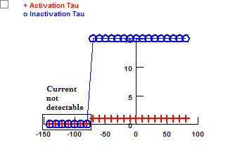

A-type potassium current (IA) is important for signal processing and excitability tuning in dendrites. Thus, it is critical to have a good IA model to simulate signals in dendrites. I examined two IA models and found they did not match published results very well. Therefore, I created an IA model based on the data in two articles, Hoffman et al (1997) and Chen et al (2004).
eK = -85 (mV)
| Bianchi | Royeck | Payne | Hoffman | Chen | |
| Activation Vhalf (mV) | 22.1 | -21.9 | 6.3 | 11 | 5 |
| Activation k (mV) | -17.6 | -15.5 | -15.3 | -18 | -16 |
| Inactivation Vhalf (mV) | -56.0 | -79.9 | -64.0 | -56 | -64 |
| Inactivation k (mV) | 8.8 | 6.0 | 9.0 | 8 | 9 |
kap (Proximal KA)
gka = gkabar * n * l
|
n (activation): V1/2 = 11.2 (mV); k = -17.1 (mV) l (inactivation): V1/2 = -56.0 (mV); k = 8.8 (mV) |
|
|
|
|
| Activation: V1/2 = 22.1 (mV); k = -17.6 (mV) |
|
|
|
| Inactivation: V1/2 = -56.0 (mV); k = 8.8 (mV) |
g = gbar * n3 * l
|
n (activation): V1/2 = -50.0 (mV); k = -20 (mV) l (inactivation): V1/2 = -80.0 (mV); k = 6.0 (mV) |
Activation: 0.5 (ms) Inactivation: 15 (ms) |
|  | ||
| Activation: V1/2 = -21.9 (mV); k = -15.5 (mV) |
| Inactivation: V1/2 = -79.9 (mV); k = 6.0 (mV) |
g = gbar * m4 * h
NMODL file: ka_p.mod
| V1/2 = -31.3 (mV); k = -20.8 (mV) |
|
m (activation): V1/2 = -31.3 (mV); k = -20.8 (mV) h (inactivation): V1/2 = -64.0 (mV); k = 9 (mV) |
Activation: 0.2 (ms) |
|
|
||
| Activation: V1/2 = 6.3 (mV); k = -15.3 (mV) |
| Inactivation: V1/2 = -64.0 (mV); k = 9.0 (mV) |